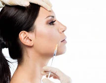
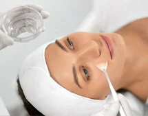
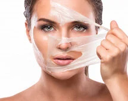
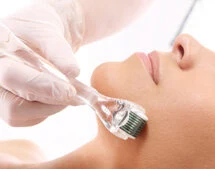

Toxina Botulínica
A toxina botulínica é indicada para reduzir linhas de expressão e rugas profundas. Por exemplo, as linhas verticais entre as sobrancelhas, as linhas horizontais na testa e os pés-de-galinha nos cantos dos olhos.
O tratamento envolve injeção em quantidades muito pequenas nos músculos subjacentes para imobilizá-los. A terapia atual é bem tolerada, rápida e a recuperação é mínima. A toxina começa a fazer efeito sete a 14 dias depois e esse efeito perdura por cerca de três a seis meses até que desaparece gradativamente, enquanto a ação muscular retorna.

Preenchimento com Ácido Hialurônico
Técnica empregada para repor o volume da face, melhorar seus contornos e formas, corrigindo sulcos, rugas e cicatrizes, por meio da injeção de ácido hialurônico.
Indicado para áreas do rosto nas quais ocorreram perdas de gordura e de sustentação, causadas pelo envelhecimento, além do contorno e volume dos lábios, tratamento de olheiras e contorno mandibular.
Os preenchedores são realizados em combinação com outros procedimentos para melhorar o resultado final, como o uso de toxina botulínica, lasers e peelings.

Peeling químico
Tratamento baseado na aplicação de agentes que destroem as camadas superficiais da pele, seguindo-se, então, da sua regeneração, com uma aparência geral melhorada.
Indicado para atenuação de rugas, manchas e cicatrizes, é uma forma segura de esfoliar e acelerar a renovação da pele. Pode ser superficial, médio e profundo. Os peelings superficiais precisam ser feitos em séries, e sua descamação costuma ser fina, enquanto os médios e profundos são realizados em aplicações únicas, com descamação mais intensa e formação de crostas. Cada paciente deve ser avaliado pelo dermatologista que indicará o melhor tratamento.

Microagulhamento
Indicado para cicatrizes, especialmente as de acne, estrias, envelhecimento e flacidez, o microagulhamento é um procedimento que consiste em microperfurações da pele com finas agulhas metálicas. Seu princípio é semelhante ao da acupuntura, porém, localizado e múltiplo, produzindo efeito apenas na área tratada. Seu resultado mais proeminente é a indução de colágeno e de outras fibras naturais na pele, bem como o espessamento da epiderme. A técnica pode ser feita por rollers (mais comum), canetas elétricas ou carimbos. É sempre importante observar se o material utilizado tem autorização da Anvisa para uso, e se as agulhas são estéreis. Em nenhuma hipótese estas podem ser reutilizadas, mesmo que no próprio paciente.

Transplante Capilar
O transplante capilar é um procedimento cirúrgico realizado sob anestesia local, com o objetivo realocar os folículos capilares que não têm predisposição para calvície (localizados na região da nuca e lateral da cabeça, chamada de “área doadora”) para a região que está calva (“área receptora”), fazendo com que os cabelos voltem a surgir nessa área.
Nos casos em que a região da área doadora se encontra comprometida, pode-se extrair os folículos de outras regiões do corpo, como a barba e tórax, por exemplo.
As técnicas mais utilizadas para o transplante capilar são: FUE (Extração de Unidade Folicular) e a FUT (Transplante de Unidade Folicular).